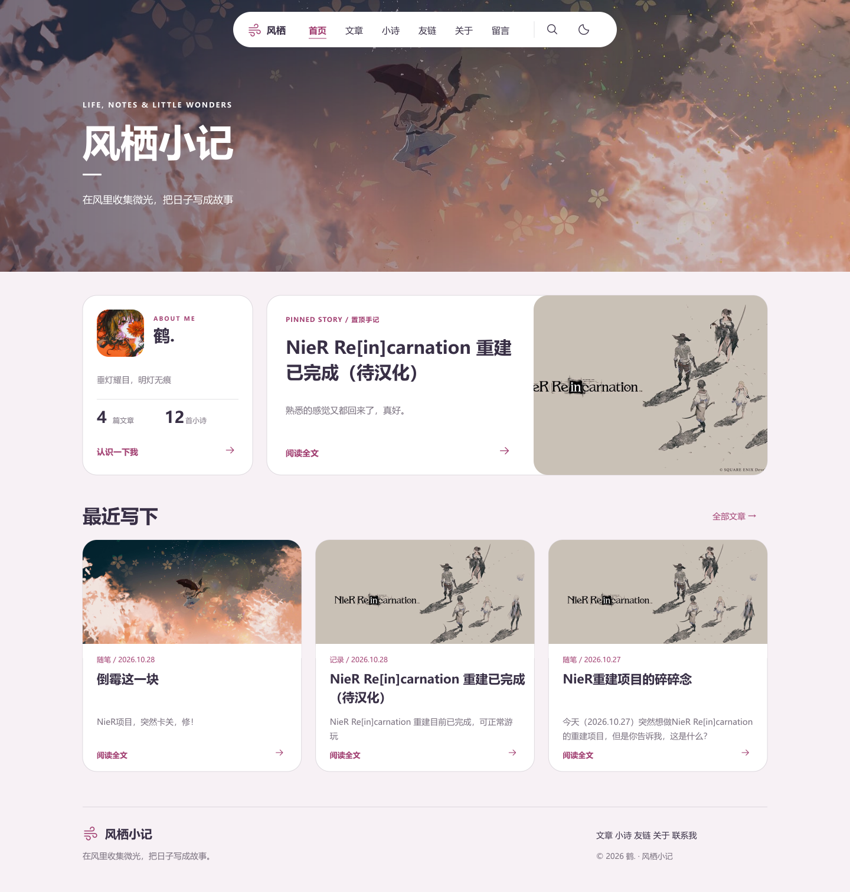
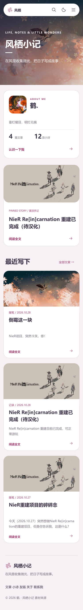
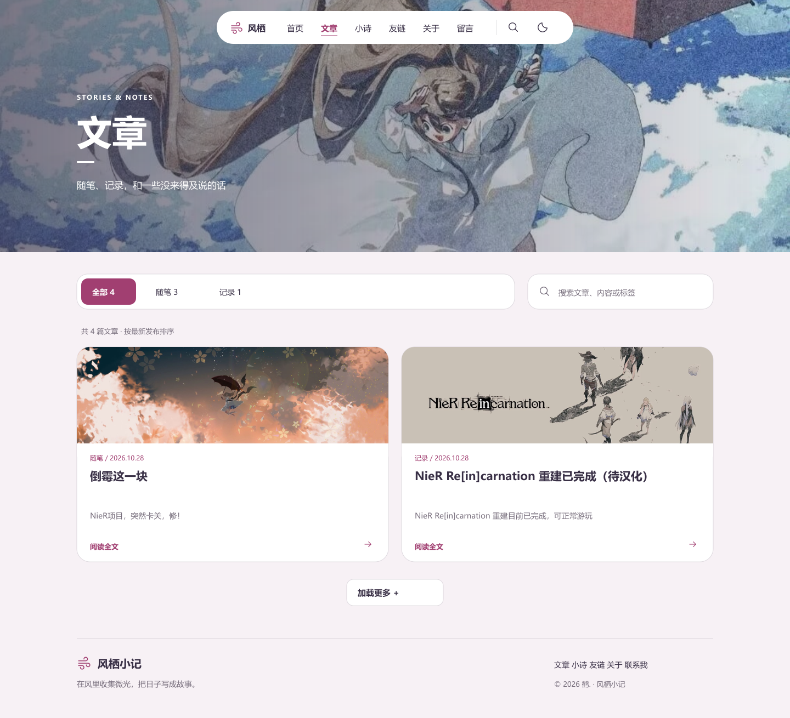
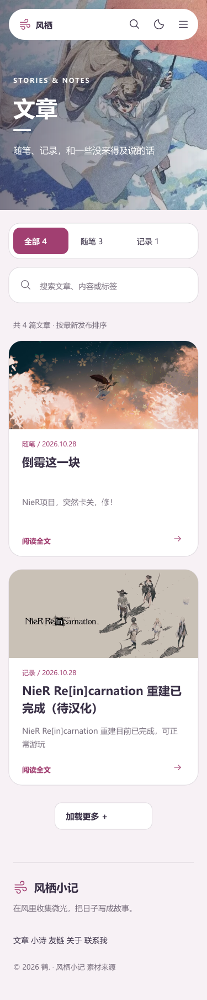
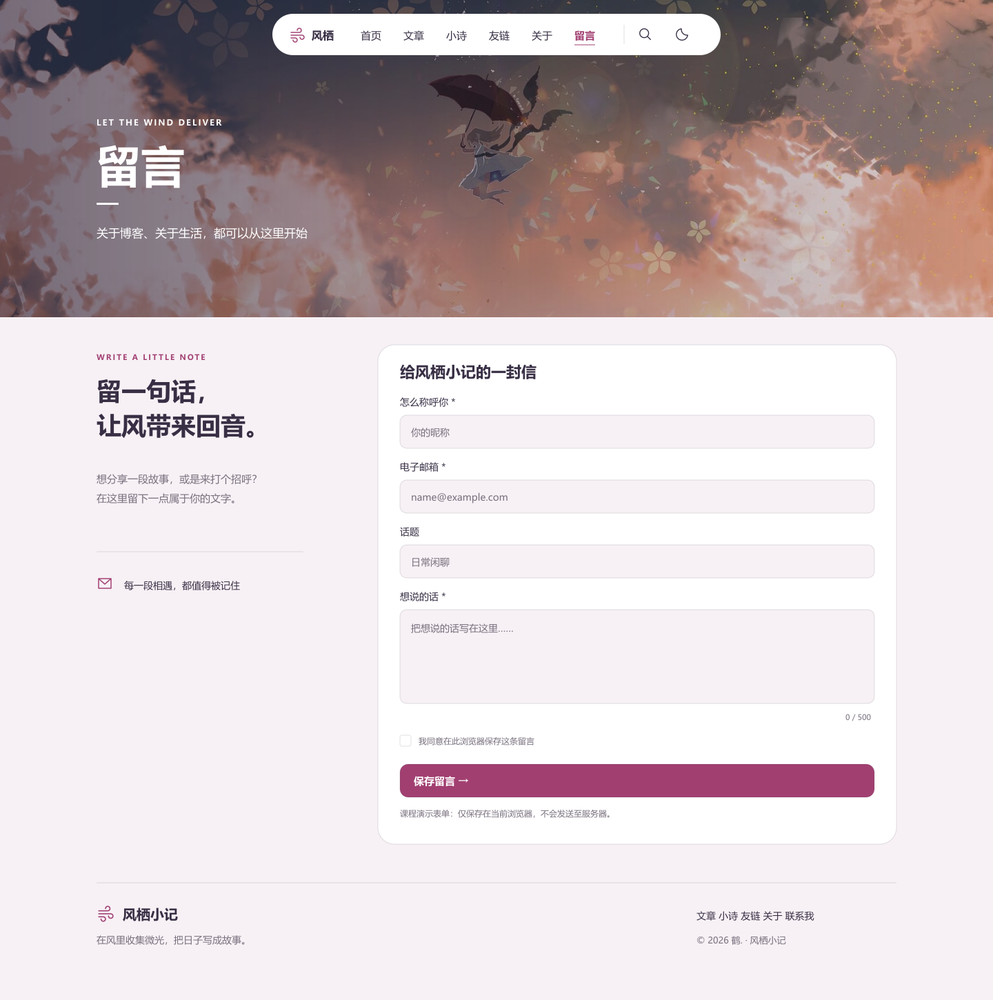
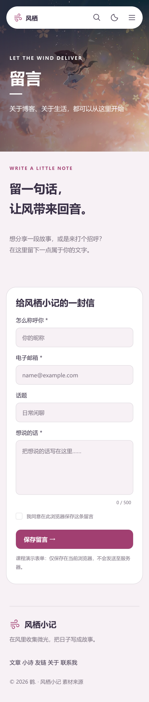
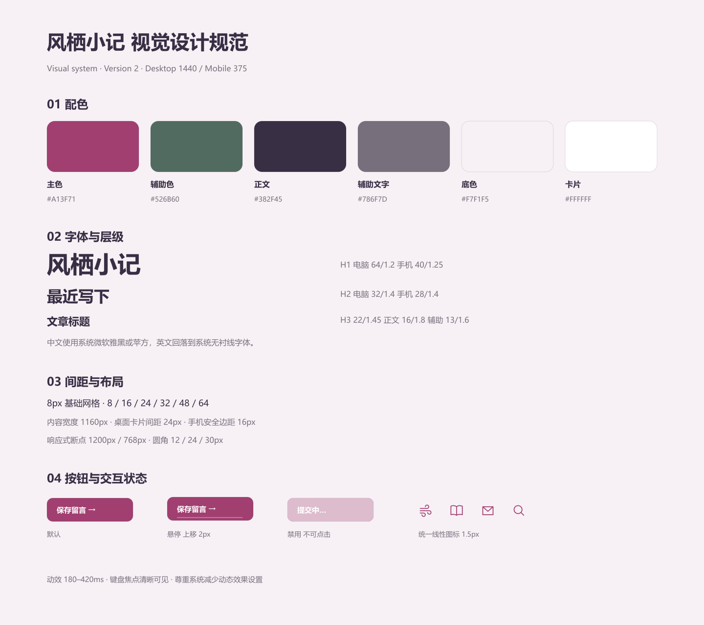
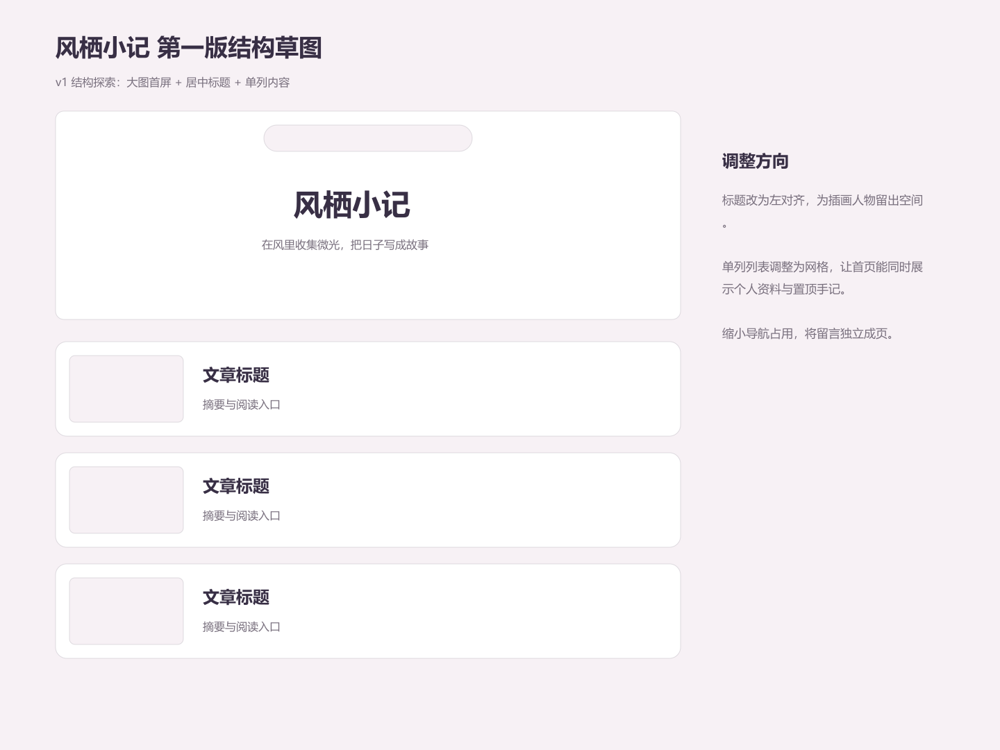

风栖小记 设计稿展示
第二版关键页面设计。桌面画布 1440px，手机画布 375px。PNG 为原尺寸导出，SVG 为可编辑设计源文件，图片已嵌入，可导入支持 SVG 的设计工具继续调整。
首页






文章列表






留言表单






设计规范

第一版结构草图

此文件为本地只读展示页。尚未创建在线协作链接；GitHub 发布后可用于网页预览，但不自动等同于设计工具协作文件。